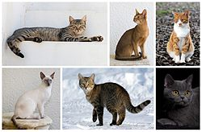

- ログインしていません
- トーク
- 投稿記録
- アカウント作成
- ログイン
ネコ
この記事は検証可能な参考文献や出典が全く示されていないか、不十分です。
出典を追加して記事の信頼性向上にご協力ください。（2016年6月）
ネコ」、「ねこ」、「猫」のその他の用法については「ネコ (曖昧さ回避)」をご覧ください。
| イエネコ |
| 生息年代: 0.0095–0 Ma |
|  |
| 地質時代 |
| 約9,500年前* - 現世 |
| （新生代第四紀完新世） |
| 分類 |
- 界 : 動物界 Animalia
- 門 : 脊索動物門 Chordata
- 亜門 : 脊椎動物亜門 Vertebrata
- 綱 : 哺乳綱 Mammalia
- 目 : 食肉目 Carnivora
- 亜目 : ネコ型亜目 Feliformia
- 科 : ネコ科 Felidae
- 属 : ネコ属 Felis
- 種 : ヨーロッパヤマネコ F. silvestrisまたは F. catus
- 亜種 : イエネコ F. s. catus
|
| 学名 |
| Felis silvestris catus |
ネコ（猫）は、狭義には食肉目ネコ科ネコ属に分類されるヨーロッパヤマネコが家畜化されたイエネコ（家猫、Felis silvestris catus）に対する通称である。人間によくなつくため、イヌ（犬）と並ぶ代表的なペットとして世界中で広く飼われている。
より広義には、ヤマネコやネコ科動物全般を指すこともある（後述）。
- 1.定義
- 2.起源
- 3.身体的特徴
-
- 3.1 概要
- 3.2 年齢と寿命
- 3.3 体格
- 3.4 体の柔軟性
- 3.5 運動能力
- 3.6 被毛
- 3.7 眼・視覚
-
- 3.8 耳・聴覚
- 3.9 鼻・嗅覚
-
- 3.10 舌・味覚
- 3.11 牙
- 3.12 ひげ
- 3.13 尾
- 3.14 襟首
- 3.15 指
- 3.16 肛門嚢
- 3.17 鳴き声
-
- 3.18 知能
- 4 繁殖
-
- 4.1 発情
-
- 4.2 交尾
- 4.3 妊娠・出産
- 4.4 子猫の性別の見分け方
- 4.5 子猫の排泄
- 5 食性
-
- 5.1 一日に成猫が必要とする栄養素
- 5.2 一日の食餌必要量
- 5.3 ネコにとって危険な物質
-
- 5.3.1 ネコに与えてはいけない食べ物
- 5.3.2 食べ物以外の危険な生活物質
- 6 自然生態系への影響